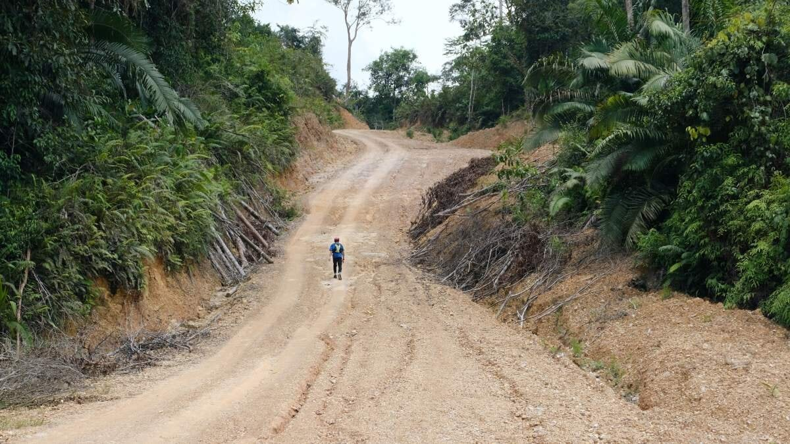
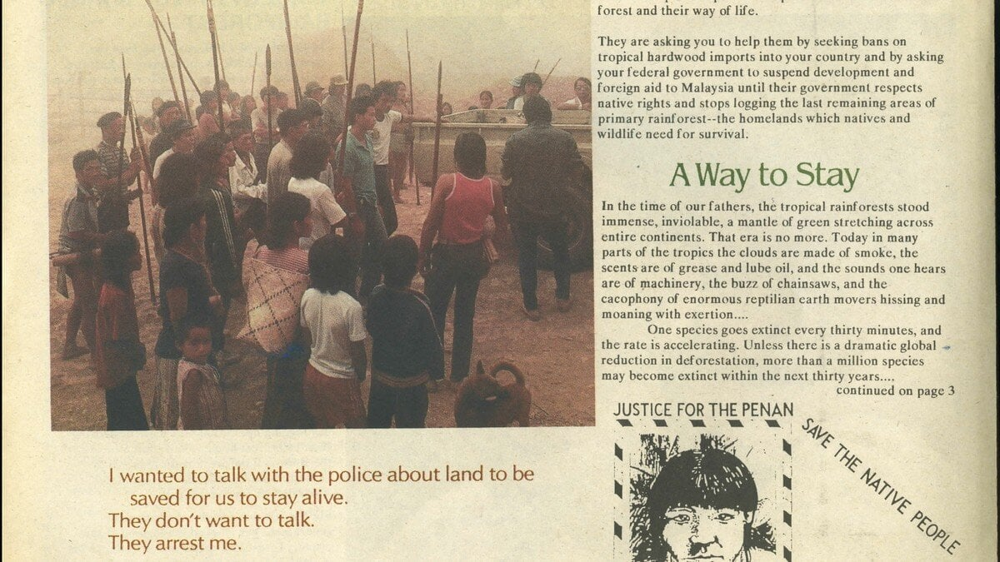
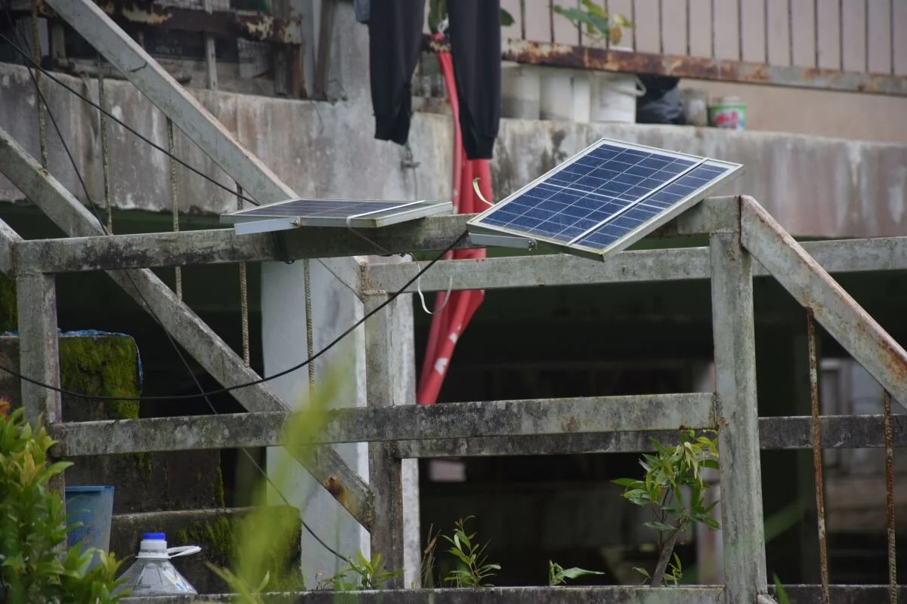
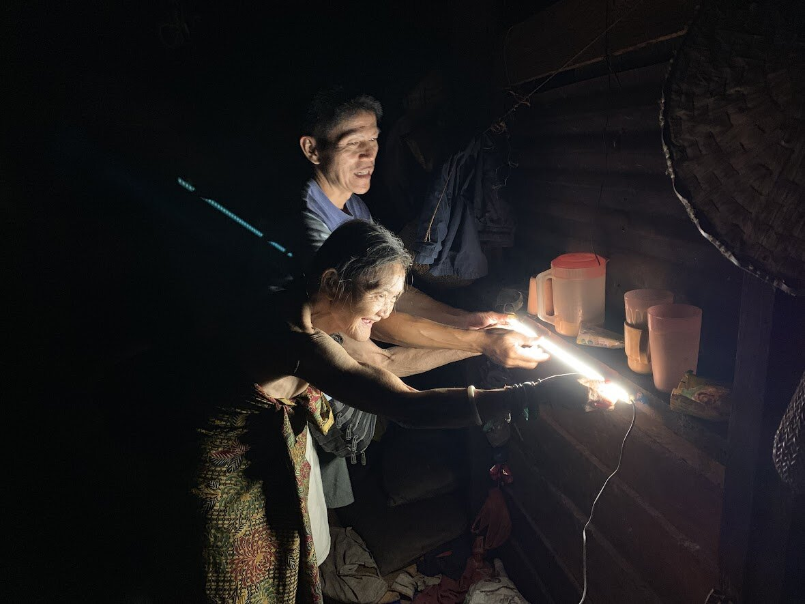
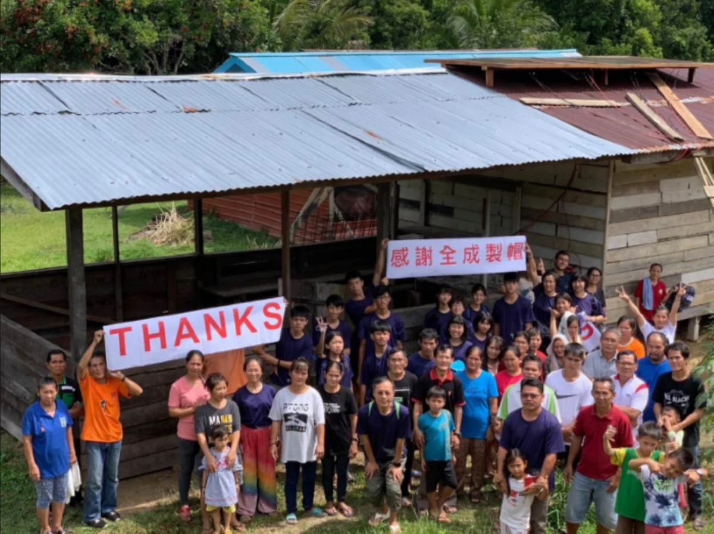

Do something to make the world more beautiful
The Borneo Rainforest is the third largest rainforest on Earth and the closest primary rainforest to Taiwan. Any changes in this ecosystem have a significant impact on Taiwan.
However, in recent years, the life of the rainforest has been gradually disappearing due to logging. During our visit, we witnessed firsthand how the once-lush forest has been reduced to bare land after the trees were cut down.....
The Penan people, indigenous to this land, are the nomadic tribe of the Borneo rainforest. While a few still maintain their nomadic lifestyle, most have settled down. To save the Borneo rainforest, they fearlessly confront logging companies and the government with their limited resources, all to protect their homeland.
The photo below shows the Penan people's roadblock protest, physically preventing loggers from entering the forest. Penan people from different areas gathered to protect their land with their bodies. Kelesau Naan, a Penan leader from Long Kerong, faced tremendous pressure for leading his people in protest. During a routine hunting trip, he never returned. His worried tribesmen searched for him, only to find his body by the river, covered in wounds and without signs of life......
One of the Penan's conservation efforts is to share their story with the world. They believe that if more people refuse to purchase illegally logged timber, the destruction of the rainforest can be slowed. With this in mind, the Penan people strive to spread awareness globally. As one of the largest importers of Malaysian timber, Taiwan is a key location for their advocacy work.
After learning about the Penan's situation, our team visited the rainforest to see how we could help. We discovered that beyond purchasing their handmade crafts, the Penan face economic challenges due to their prolonged resistance against logging. Even villages just a 15-20 minute walk from Mulu Airport still lack stable electricity.
We are a group of parents and children who organize annual trips to the Borneo rainforest. We install solar power systems in remote Penan villages without electricity, ensuring they can maintain basic daily operations while protecting their forest home.
Each Penan family receives an LED light tube and a power bank. During the day, villagers charge the power banks, which can then provide basic lighting for their homes at night. The photo shows us installing solar light tubes for an elderly woman. Her smile made us realize that what we take for granted is a precious resource for them. Now, Penan children no longer have to do their homework under the dim light of headlamps.
Since 2016, this project has been running for ten years, bringing solar power systems to 11 Penan villages. However, more than 10 villages still lack access to solar electricity.
We dream of a world that lives in harmony with nature. We hope to do something to make the world more beautiful.
Whether through donations or spreading our message, your participation can make a difference in rainforest conservation.
Donate Now